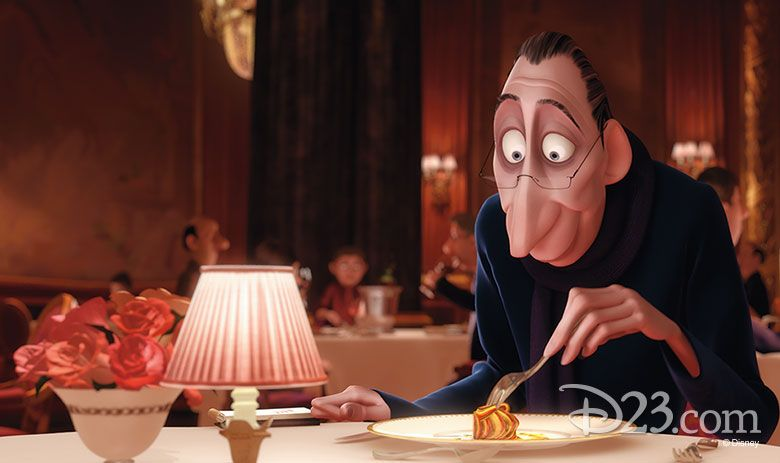
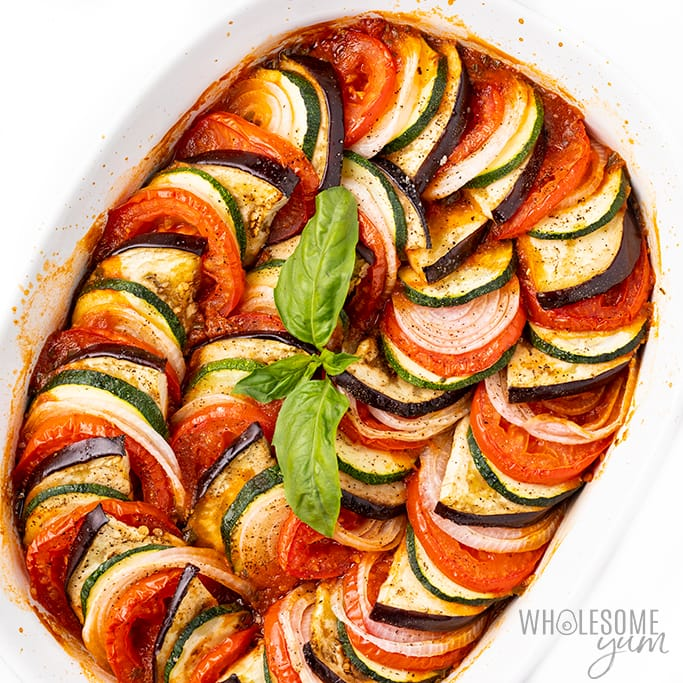

Ratatouille


A French dish, who's name comes from the French term "touiller", which simply means to toss food.
Ratatouille, is a French Provençal dish of stewed vegetables, originating in Nice, and sometimes referred to as
ratatouille niçoise.
The famous dish from the movie "Ratatouille", in which the message is that taking risks and doing something
unexpected can lead to success in other parts of like aswell.
Ingredients
- 2 aubergines
- 4 small courgettes
- 2 red peppers
- 4 large tomatoes
- 4 tbsp olive oil
- 2 chopped onions
- 2 crushed garlic cloves
- 1/2 tsp sugar
- salt
- freshly ground black pepper
- basil
Recipe Instructions
- Cut the aubergines into quarters lengthways, then cut the quarters into 2.5cm/1in slices. Cut the courgettes
into 2.5cm/1in slices. De-seed the peppers and cut them into bite-sized pieces.
- To peel the tomatoes, score a cross in the base of each tomato and place them in a heatproof bowl. Pour over
enough boiling water to cover and set aside for one minute. Drain and, when cool enough to handle, peel away
the skins. Roughly chop the flesh.
- Heat the oil in a flameproof casserole dish and add the onions. Cook over a gentle heat for 8-10 minutes,
stirring occasionally, until golden-brown and very tender. Add the aubergines and courgettes, increase the
heat slightly and cook for 2-3 minutes. Stir in the peppers, garlic, sugar, some salt and pepper and half
the basil and mix well. Cover and cook over a very gentle heat for 20 minutes.
- Add the tomatoes to the pan and cook for a further 10 minutes. Scatter the ratatouille with the remaining
basil and serve.
Return to main page